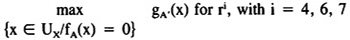
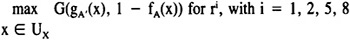
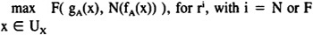

by Abraham Kandel
CRC Press, CRC Press LLC
ISBN: 084934297x Pub Date: 11/01/91
|
|
Fuzzy Expert Systems
by Abraham Kandel CRC Press, CRC Press LLC ISBN: 084934297x Pub Date: 11/01/91 |
| Previous | Table of Contents | Next |
If the premise of the rule is fuzzy (example R1), in the case where fA(x′1) = 0, the fact is incompatible with the rule, and the previous remarks are still valid. In the case where fA′(x1) ≠ 0, we can observe any point y of UY with a 0 membership function gB′(y), which means that there is no probability of y being concerned in the conclusion of the rule.
An indetermination H appears when the two following facts occur at the same time: some elements y of UY are not probable with regard to the characterization of Y expressed in the conclusion of the rule (fB(y) = 0), and the observed evidence is not perfectly identical with the premise of the rule (gA′ ≠ fA). Then the values of gB′ may admit a bottom different from 0, and its height indicates the least probability of an element of UY to be involved in the deduced evidence.
The value of this indetermination is 0 for the fuzzy inference r3. It is

It equals

and

Once more, a position must be adopted by the specialist. Either he chooses a combination law and a fuzzy implication so that an indetermination appears (expressed by the minimum value of gB′), implying that the fact deduced from the inference can be used in a further rule if it matches its premise in a generalized modus ponens process; or he prefers a solution so that an element of the universe UY is not probable in the deduced evidence if it was not probable in the conclusion of the rule.
Of interest in the use of linguistic variables in the management of uncertainty is the probability of changing the intensity of the characterization of the variable by means of modifiers (very, moderately, ... ), as indicated previously. Their use generates a modification of the probability distributions associated with the attributes.15 General classes of operations can be defined to construct the probability distribution g representing the modified attribute from the probability distribution f of the attribute itself. For instance, very may induce g(x) = f(x)2, for any x in the universe corresponding to the concerned variable, in such a way that g represents very high if f is associated with high.
An important criterion to choose a fuzzy implication and a combination law for the generalized modus ponens deals with the behavior of the modifiers, when used in a rule. In other words, if an observation is different from the premise of the rule because of the introduction of a modifier in the characterization of the variable, it is interesting to compare the fact inferred by the generalized modus ponens process with the consequent of the rule. We can express some remarks about two classes of modifiers, as follows.
First of all, expansive modifiers, such as very, strongly, really, which reinforce the attribute, can be represented by transformations of the possibility distributions so that the characterization A′ of the observation is more specific than the characterization A of the variable in the premise of the rule, according to the indications given in Section III. For example, if A is small in the rule and A′ is really small for the observation, the conclusion is generally high as indicated by R1, but could be more specific (gB ≤ fB) for i = 4.
On the contrary, restrictive modifiers, such as not very, moderately, somewhat, can be represented by transformations of the possibility distribution describing the attribute they modify, so that A′ is less specific than A. For instance, if A is small and A′ is not very small, we deduce a conclusion from R1 telling that A′ is pretty high if we choose i ≠ 3, and B′ is B (high) otherwise. It seems that a discussion on the interest of a behavior or the other one depends on semantic reasons and also on the context of rule and observation. The expert must again express his preferences for a given knowledge-based system. The study of such properties is not yet finished, and only certain kinds of modifiers have been considered.
It appears that the management of uncertainty and imprecision is fundamental in knowledge-based systems, and the classical probabilistic methods are not always sufficient, because of the various types of ambiguity involved in rules and observations. Fuzzy logic provides new tools to cope with these problems, but a careful choice of the appropriate implication and combination law for the generalized modus ponens is necessary to avoid unacceptable conclusions.
| Previous | Table of Contents | Next |